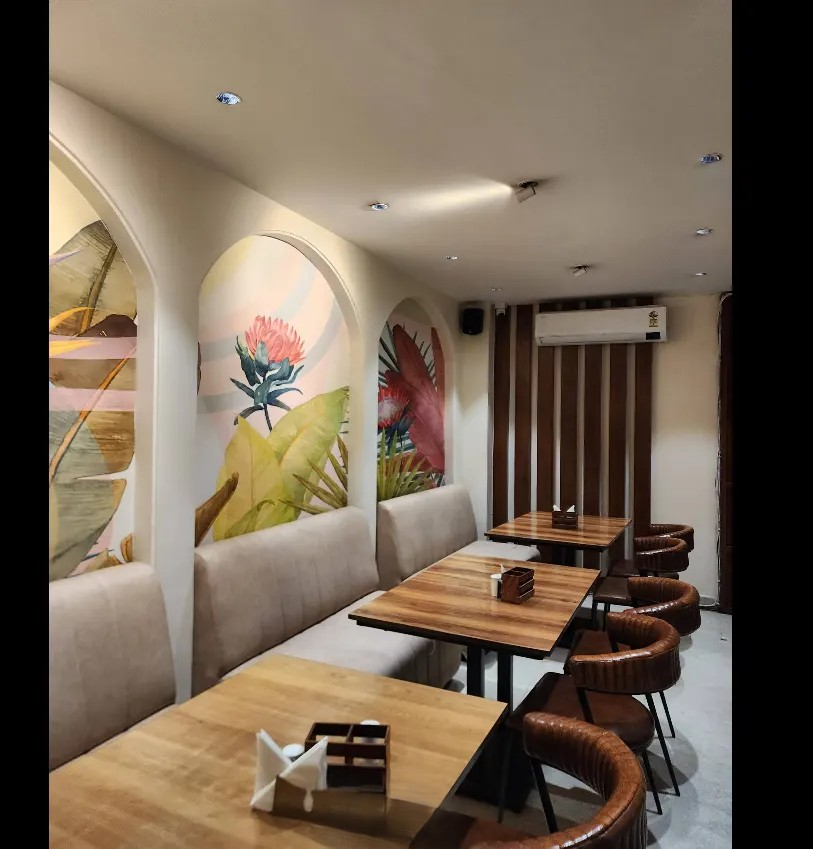
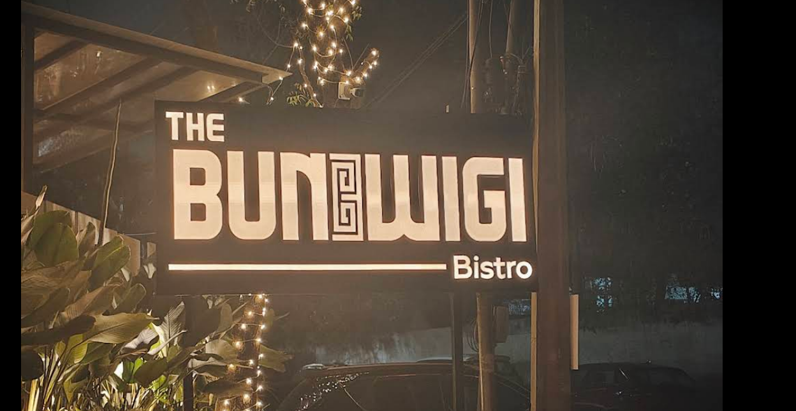

Nizampet, Hyderabad
Virasat — The Exotic Veg
Pure-vegetarian restaurant, 4.6★ on Google. Concept focus: a fully priced, category-by-category menu.
Unsolicited concept · pitched, not adopted
Banjara Hills, Hyderabad
The Bun-Wigi Bistro
Pan-Asian and continental restaurant, 4.7★ on Google. Concept focus: a 16-category menu with a Veg / Non-Veg filter.
Unsolicited concept · pitched, not adopted
Los Angeles, CA
Jaquelines Flowers
Family-owned, bilingual florist, 5.0★ on Google. Concept focus: an English / Spanish switcher. Photography is stock, standing in until the owner shares their own.
Unsolicited concept · pitched, not adopted